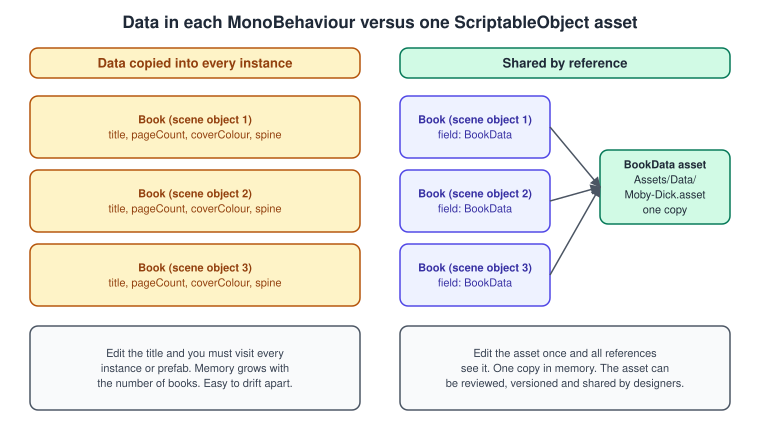
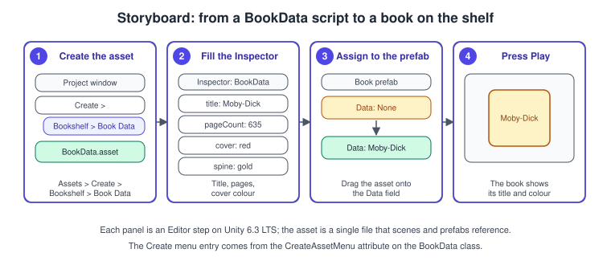
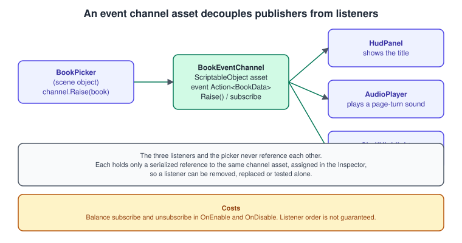
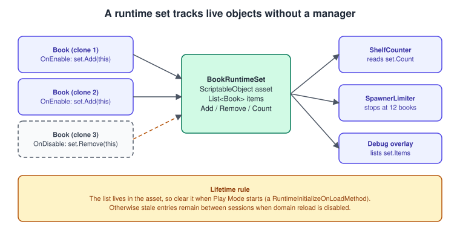

ScriptableObjects and Data-Driven Design
|
This content was generated with the assistance of AI and should be verified against the official documentation before being relied on in production. |
A MonoBehaviour lives on a GameObject in a scene. A ScriptableObject lives in the project, as an asset file, independent of any scene. That one difference is enough to change how a Unity game is organised: the numbers a designer
tunes (a book’s title, a spawn rate, a scoring rule) can be assets that scenes and prefabs point to, instead of values copied into every object. This is called data-driven design, and it is the backbone of the Bookshelf
project from here on: a BookData asset per title, event channels that connect the picker to the HUD without references between them, and a runtime set that knows which books are alive.
The facts were checked in November 2026 against the documentation of Unity 6.3 LTS (6000.3), the version documented in this section; where Unity 6.6 (6000.6) changes behaviour, the text says so. The code needs no package beyond the default ones and runs in the Editor and in players on every platform. The prerequisites are the lifecycle and serialization rules of C# Scripting and the MonoBehaviour Lifecycle and the prefabs of Prefabs and Scenes. The shared model is bookshelf.glb.
What a ScriptableObject is
ScriptableObject is a serializable class derived from UnityEngine.Object, like MonoBehaviour. You never instantiate the base class: you write your own subclass, and create instances of it, usually as asset files from the
Assets menu. Unlike a MonoBehaviour, an instance is not attached to a GameObject, and because it is a UnityEngine.Object you can drag one into any Inspector field of a script.
The official documentation names two main uses: keeping data during an Editor session (which is why many Editor tools derive from it) and keeping data as an asset to use at runtime. The second is the one games use. Its value as a data store is shared data: a prefab that stores unchanging values in a MonoBehaviour gives every instance its own copy; with a ScriptableObject all instances read one copy by reference.

| MonoBehaviour | ScriptableObject | |
|---|---|---|
Lives in |
A scene or prefab, on a GameObject |
The project as an asset file (or in memory, created from code) |
Lifetime |
Created and destroyed with its GameObject |
Loaded when referenced, until nothing references it and unused assets are unloaded |
Receives |
Yes |
No. It has |
Per instance data |
Yes, each component has its own |
One copy per asset, shared by every reference |
Best for |
Behaviour tied to an object in the world |
Configuration, shared state, definitions, channels |
A data asset: BookData
using UnityEngine;
namespace Bookshelf
{
/// <summary>Designer-authored description of one book title. One asset per title.</summary>
[CreateAssetMenu(fileName = "BookData", menuName = "Bookshelf/Book Data", order = 10)]
public class BookData : ScriptableObject
{
[SerializeField] private string title = "Untitled";
[SerializeField, Min(1)] private int pageCount = 100;
[SerializeField] private Color coverColor = Color.white;
[SerializeField] private Color spineColor = Color.gray;
[SerializeField] private Texture2D coverTexture;
[SerializeField, TextArea] private string blurb;
public string Title => title;
public int PageCount => pageCount;
public Color CoverColor => coverColor;
public Color SpineColor => spineColor;
public Texture2D CoverTexture => coverTexture;
public string Blurb => blurb;
// Runs in the Editor when the asset is loaded or a value changes: keep authored data valid here.
private void OnValidate()
{
title = string.IsNullOrWhiteSpace(title) ? "Untitled" : title.Trim();
pageCount = Mathf.Max(1, pageCount);
}
}
}The fields are private with read-only properties: the asset is configuration, and nothing at runtime should change it (see the persistence section below). The book that uses it:
using UnityEngine;
namespace Bookshelf
{
public class Book : MonoBehaviour
{
[SerializeField] private BookData data; // reference to the shared asset
[SerializeField] private Renderer coverRenderer;
[SerializeField] private Renderer spineRenderer;
private static readonly int BaseColor = Shader.PropertyToID("_BaseColor");
private MaterialPropertyBlock block;
public BookData Data => data;
private void Awake() => block = new MaterialPropertyBlock();
private void OnEnable() => Apply();
/// <summary>Called by the spawner after Instantiate, before the book is shown.</summary>
public void Initialize(BookData newData)
{
data = newData;
Apply();
}
private void Apply()
{
if (data == null) return; // an unassigned reference is legal in a prefab
Paint(coverRenderer, data.CoverColor);
Paint(spineRenderer, data.SpineColor);
}
private void Paint(Renderer target, Color color)
{
target.GetPropertyBlock(block);
block.SetColor(BaseColor, color);
target.SetPropertyBlock(block);
}
}
}To create the asset and use it:
-
Save
BookData.csand wait for Unity to compile it. -
In the Project window, choose Assets > Create > Bookshelf > Book Data (the path comes from the
menuNameofCreateAssetMenu). A new asset namedBookDataappears; type a name such asMobyDickand press Enter. -
Select the asset. The Inspector shows its fields as it would for a component. Fill in the title, page count and colours.
-
Select the
Bookprefab (or an instance) and drag the asset into the Data field of theBookcomponent, or click the circle beside the field to pick it. -
Press Play. Each book is painted from its asset when it is enabled. Books that reference the same asset always agree, and changing the asset changes them all the next time they are enabled.

A ScriptableObject that is not saved as an asset (created with ScriptableObject.CreateInstance and referenced from a scene object) is serialized directly into that scene file, so it has no file of its own. Use
AssetDatabase.CreateAsset in editor code to save one as an asset. Large arrays of data in an asset should carry the PreferBinarySerialization attribute, because YAML is a poor format for them.
Variants of data: ScriptableObjects and prefab variants
The Bookshelf uses both tools, each for what it does best. A prefab variant holds a difference of structure (a hardback has a thicker mesh and a bigger collider than a pamphlet). A BookData asset holds a difference of content (title,
colours, page count). With one prefab, thirty assets give thirty books, and nothing in a scene stores a title: a designer edits the assets, and a scene that lists BookData references stays small and diff-friendly. A common
mistake is to create thirty prefab variants that differ only by a colour.
The persistence caveats
This is the topic that causes most ScriptableObject bugs. The object in memory and the file on disk behave differently depending on where the code runs.
| Situation | What happens to a change made from code | Consequence |
|---|---|---|
Editor, in Play Mode |
The change is made on the loaded object and stays in memory after you stop Play Mode |
The in-memory value carries over to the next Play session, and the file on disk changes only when Unity saves the asset. Surprising behaviour: data "leaks" from one test run to the next. |
Editor, Edit Mode (tools, editor scripts) |
The change is on the object in memory |
Call |
Player (build) |
The asset is read from the build |
A change lives until the app quits and is never written back. Do not use an asset as a save file. |
Editor, domain reload disabled |
Non-serialized fields keep their values between Play sessions, and |
State you thought was reset is still there (see below). |
The rules that follow are simple:
-
Treat authored fields of an asset as read-only at runtime. Put anything that changes during play into a MonoBehaviour, a plain C# class, or a separate runtime object.
-
When you do need a value that starts from an authored initial value (a score, a health bar), keep two fields: a serialized initial value and a non-serialized runtime value that is copied from it at the right moment (the variable below).
-
A game’s save data is a plain C# class written as JSON (see Saving, Loading and HTTP Networking), not a ScriptableObject.
-
To work on a copy, call
Instantiate(asset): the clone is a new in-memory object, and changes to it never reach the file.
Unity’s ScriptableSingleton base class is for assets that have one persistent instance and are used only in Edit mode (settings of an Editor tool). For a runtime "singleton" asset, Unity says you must write your own pattern
and manage asset creation and loading yourself; the simplest form is a serialized reference to one asset, passed to the objects that need it.
Calling Destroy on a ScriptableObject releases its native resources but leaves a managed object that compares equal to null; as for every UnityEngine.Object, do not use ?. or ?? on it
(see C# Scripting and the MonoBehaviour Lifecycle).
Runtime variables
A variable asset holds a value that several unrelated objects read and write: the score, shared by the falling-book spawner, the HUD and the audio. The asset has an authored initial value and a runtime value that is reset every time the game starts.
using System;
using UnityEngine;
namespace Bookshelf
{
[CreateAssetMenu(fileName = "ScoreVariable", menuName = "Bookshelf/Variables/Int Variable")]
public class IntVariable : ScriptableObject, ISerializationCallbackReceiver
{
[SerializeField] private int initialValue;
[NonSerialized] private int runtimeValue;
public event Action<int> Changed;
public int Value
{
get => runtimeValue;
set
{
if (value == runtimeValue) return;
runtimeValue = value;
Changed?.Invoke(runtimeValue);
}
}
public void Add(int amount) => Value += amount;
// Called when the asset is loaded (possibly off the main thread, so only touch plain data here).
public void OnAfterDeserialize() => runtimeValue = initialValue;
public void OnBeforeSerialize() { }
// With domain reload disabled the asset stays loaded between Play sessions, so reset explicitly too.
[RuntimeInitializeOnLoadMethod(RuntimeInitializeLoadType.SubsystemRegistration)]
private static void ResetAll()
{
foreach (IntVariable variable in Resources.FindObjectsOfTypeAll<IntVariable>())
{
variable.runtimeValue = variable.initialValue;
variable.Changed = null;
}
}
}
}The Changed event lets a HUD update only when the value changes, without polling it every frame. The static reset is the same technique as for statics in the lifecycle page, applied to instance fields of assets that stay
loaded when Unity 6.6 projects skip the domain reload.
Event channels
An event channel is an asset that stands for a game event. Objects that cause the event hold a reference to the asset and call Raise; objects that react hold a reference to the same asset and subscribe. The two sides never
reference each other, so you can add a listener, replace a publisher or test either one alone.

using System;
using UnityEngine;
namespace Bookshelf
{
[CreateAssetMenu(fileName = "BookPickedChannel", menuName = "Bookshelf/Events/Book Event Channel")]
public class BookEventChannel : ScriptableObject
{
public event Action<BookData> Raised;
public void Raise(BookData book)
{
Raised?.Invoke(book);
}
}
}using UnityEngine;
using UnityEngine.Events;
namespace Bookshelf
{
/// <summary>Put it next to anything that must react to a channel; wire the response in the Inspector.</summary>
public class BookEventListener : MonoBehaviour
{
[SerializeField] private BookEventChannel channel;
[SerializeField] private UnityEvent<BookData> response;
private void OnEnable()
{
if (channel != null) channel.Raised += OnRaised;
}
private void OnDisable()
{
if (channel != null) channel.Raised -= OnRaised; // always balance OnEnable
}
private void OnRaised(BookData book) => response.Invoke(book);
}
}using UnityEngine;
using UnityEngine.InputSystem;
namespace Bookshelf
{
public class BookPicker : MonoBehaviour
{
[SerializeField] private BookEventChannel bookPicked;
[SerializeField] private Camera viewCamera;
private void Update()
{
Mouse mouse = Mouse.current;
if (mouse == null || !mouse.leftButton.wasPressedThisFrame) return;
Ray ray = viewCamera.ScreenPointToRay(mouse.position.ReadValue());
if (Physics.Raycast(ray, out RaycastHit hit) && hit.collider.TryGetComponent(out Book book))
bookPicked.Raise(book.Data); // no idea who listens
}
}
}Source: Unity Scripting API: UnityEvent
The picker uses the Input System package (installed by default in new Unity 6 projects) and a ray-cast; both are covered in Input System and 3D Physics.
Costs and trade-offs of channels:
-
Subscriptions must be balanced in
OnEnableandOnDisable; a forgotten unsubscribe leaves a handler on a destroyed object, and because the asset outlives scenes (and, with domain reload disabled, Play sessions), the mistake persists. -
Listeners run in the order they subscribed, which you should not rely on.
-
The flow of control is harder to follow in the code: the Inspector shows who is connected, the IDE does not. Name channels after the thing that happened (
BookPicked, notEvent1) and log in the channel while developing. -
A channel with no payload type and a
UnityEventresponse is easy for designers; a typed channel is safer for programmers. Pick one convention per project.
The same idea with plain C# events and an event bus is compared in Project Architecture and Design Patterns.
Runtime sets
A runtime set is an asset that holds a list of live objects, so that other objects can find them without a manager singleton or a FindObjectsByType search every frame.

// BookRuntimeSet.cs
using System.Collections.Generic;
using UnityEngine;
namespace Bookshelf
{
[CreateAssetMenu(fileName = "BookRuntimeSet", menuName = "Bookshelf/Sets/Book Runtime Set")]
public class BookRuntimeSet : ScriptableObject
{
private readonly List<Book> items = new();
public IReadOnlyList<Book> Items => items;
public int Count => items.Count;
public void Add(Book book)
{
if (!items.Contains(book)) items.Add(book);
}
public void Remove(Book book) => items.Remove(book);
[RuntimeInitializeOnLoadMethod(RuntimeInitializeLoadType.SubsystemRegistration)]
private static void ClearAll()
{
foreach (BookRuntimeSet set in Resources.FindObjectsOfTypeAll<BookRuntimeSet>())
set.items.Clear();
}
}
}// BookSetMember.cs: add to the Book prefab; it registers the book while it is enabled.
using UnityEngine;
namespace Bookshelf
{
/// <summary>Registers the book with a runtime set while it is enabled.</summary>
[RequireComponent(typeof(Book))]
public class BookSetMember : MonoBehaviour
{
[SerializeField] private BookRuntimeSet set;
private Book book;
private void Awake() => book = GetComponent<Book>();
private void OnEnable() => set.Add(book);
private void OnDisable() => set.Remove(book);
}
}The list is a non-serialized field on purpose: it is runtime state and must never be written into the asset. In the "Shelve-it" game, a spawner reads Count to stop at twelve falling books, and a debug overlay lists the
members.
Behaviour in assets: strategy assets
Because an asset is a C# object, it can carry behaviour as well as data, so a designer can swap the rule by assigning a different asset. The scoring rule of "Shelve-it" is an abstract ScriptableObject with two implementations:
using UnityEngine;
namespace Bookshelf
{
public abstract class ScoringRule : ScriptableObject
{
/// <summary>Points for shelving a book with the given time left on the clock.</summary>
public abstract int Score(BookData book, float secondsLeft);
}
[CreateAssetMenu(fileName = "SimpleScoring", menuName = "Bookshelf/Scoring/Simple")]
public class SimpleScoring : ScoringRule
{
[SerializeField] private int pointsPerBook = 10;
public override int Score(BookData book, float secondsLeft) => pointsPerBook;
}
[CreateAssetMenu(fileName = "PageBonusScoring", menuName = "Bookshelf/Scoring/Page Bonus")]
public class PageBonusScoring : ScoringRule
{
[SerializeField] private int basePoints = 5;
[SerializeField, Min(1)] private int pagesPerExtraPoint = 50;
[SerializeField] private float timeBonusPerSecond = 0.5f;
public override int Score(BookData book, float secondsLeft) =>
basePoints + book.PageCount / pagesPerExtraPoint + Mathf.RoundToInt(secondsLeft * timeBonusPerSecond);
}
}Each ScriptableObject subclass must be in a file with its own name (ScoringRule.cs, SimpleScoring.cs and so on), or Unity cannot create assets of it. A field of type ScoringRule in the game manager then
accepts either asset, chosen in the Inspector. This is the Strategy pattern, with the strategy stored as an asset (see
Project Architecture and Design Patterns).
Loading assets: how a reference reaches the game
-
A reference in a serialized field is loaded together with the scene or prefab that contains it. That is the default and the one to use.
-
Resources.Loadloads from a specialResourcesfolder and puts everything in that folder in the build; avoid it for new code. -
Addressables load assets (including ScriptableObjects) on demand, by key, from the build or from remote storage: see Assets, Addressables and Content.
-
An asset that nothing references is not included in the build at all (unless it is in
Resources, in an Addressables group or in an AssetBundle), which is why a ScriptableObject found withResources.FindObjectsOfTypeAllonly exists there if something loaded it first.
Common mistakes
-
Writing runtime state into the asset: the value leaks between Play sessions in the Editor and is lost in builds. Keep runtime state in a separate field that is reset on load, or in the MonoBehaviour.
-
Forgetting
EditorUtility.SetDirtyin editor code that changes an asset, and then losing the change. -
A ScriptableObject class in a file with a different name: the Create menu entry is missing or Unity reports that the script class cannot be found.
-
Using
?.on a destroyed asset reference (see the lifecycle page). -
Events that never unsubscribe: the listener is destroyed but the asset still calls it.
-
Making every value a variable asset: assets used where a field would do add files, indirection and Inspector clicks for no gain. Use an asset when data is shared, authored by designers or swapped as a unit.
-
Assuming
OnEnableof an asset runs on every Play: it does not when the domain is not reloaded. -
Relying on an asset to exist in a build because it exists in the project: only referenced assets are included.
-
Saving the player’s progress into an asset.
Performance notes
-
An asset is shared, so reading it is as cheap as reading a field of another object: one pointer dereference. The memory saving of sharing is real when the data is large (a table, a curve, a mesh list), and negligible for three floats.
-
Large data assets load with their dependents: keep a 50 MB table out of the prefab that you instantiate a hundred times per second, or reference it indirectly through Addressables.
-
PreferBinarySerializationmakes large serialized arrays smaller and faster to load, at the cost of less readable files in version control. -
An event channel call is a delegate invocation (a few nanoseconds per listener); the cost to watch is allocation in the handlers (see Profiling and Optimization).
-
Resources.FindObjectsOfTypeAllscans all loaded objects: use it in start-up code such as the reset method above, never per frame.
What changed recently
| Version | Change |
|---|---|
Unity 6.0 (October 2024) |
|
Unity 6.3 LTS (December 2025) |
Documented version of this page. |
Unity 6.5 |
Objects are identified by the 64-bit |
Unity 6.6 (September 2026) |
New projects default to Reload Scene only: no domain reload on entering Play Mode, so non-serialized fields of assets and static events keep their values between sessions. Dictionaries can now be serialized in a ScriptableObject
with |
Where the books are outdated
GDP means Game Development Patterns with Unity 2021, 2nd edition (David Baron, Packt, 2021, for Unity 2021.1 and later); it covers ScriptableObjects in chapter 3. The idea has not changed; the surrounding Unity version has.
| In GDP | In Unity 6.3 LTS and later | What to do |
|---|---|---|
Chapter 3 shows ScriptableObject data for Unity 2021 |
|
Follow the pattern as written; add the reset logic above when the domain reload is off |
Chapter 6 links to Unity 2021.2 UnityEvent documentation for events |
The concept of |
Use the channels above for decoupling, C# events for code-only paths |
Chapters 4 and 9 use |
|
Replace with a serialized reference to an asset, or with a runtime set |
See also
-
Editor Scripting and Tooling (custom inspectors for assets)
-
Entity Component System (the data-oriented alternative to components that hold data)
References
-
Unity Manual, ScriptableObject data assets: https://docs.unity.com/en-us/engine/6000.3/manual/scripting/get-started/fundamental-unity-types/class-scriptable-object
-
Unity Manual, Unity’s Object base class: https://docs.unity.com/en-us/engine/6000.3/manual/scripting/get-started/fundamental-unity-types/class-object
-
Unity Manual, serialization rules: https://docs.unity.com/en-us/engine/6000.3/manual/programming-environment/code-reload-serialization/script-serialization/rules
-
Unity Manual, Enter Play mode with domain reload disabled: https://docs.unity.com/en-us/engine/6000.3/manual/programming-environment/code-reload-serialization/code-reloading-editor/domain-reloading
-
Unity Manual, What’s new in Unity 6.6: https://docs.unity.com/en-us/engine/6000.6/manual/whats-new/unity66
-
Unity Scripting API, ScriptableObject: https://docs.unity.com/en-us/engine/6000.3/script-reference/unityengine/scriptableobject
-
Unity Scripting API, CreateAssetMenuAttribute: https://docs.unity.com/en-us/engine/6000.3/script-reference/unityengine/createassetmenuattribute
-
Unity Scripting API, ISerializationCallbackReceiver: https://docs.unity.com/en-us/engine/6000.3/script-reference/unityengine/iserializationcallbackreceiver
-
Unity Scripting API, UnityEvent: https://docs.unity.com/en-us/engine/6000.3/script-reference/unityengine/events/unityevent
-
Unity Scripting API, EditorUtility.SetDirty: https://docs.unity.com/en-us/engine/6000.3/script-reference/unityeditor/editorutility/setdirty
-
Unity Learn, Introduction to ScriptableObjects: https://learn.unity.com/tutorial/introduction-to-scriptable-objects
-
Unity e-book, Level up your code with design patterns and SOLID: https://unity.com/resources/design-patterns-solid-ebook
-
David Baron, Game Development Patterns with Unity 2021, 2nd edition, Packt: https://www.packtpub.com/en-us/product/game-development-patterns-with-unity-2021-9781800208438